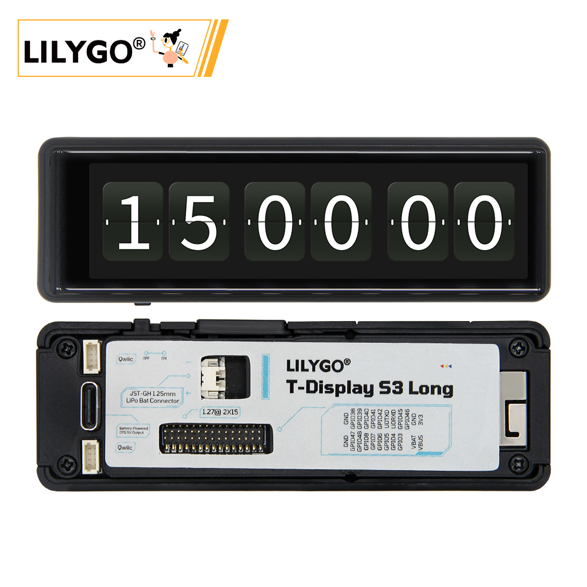
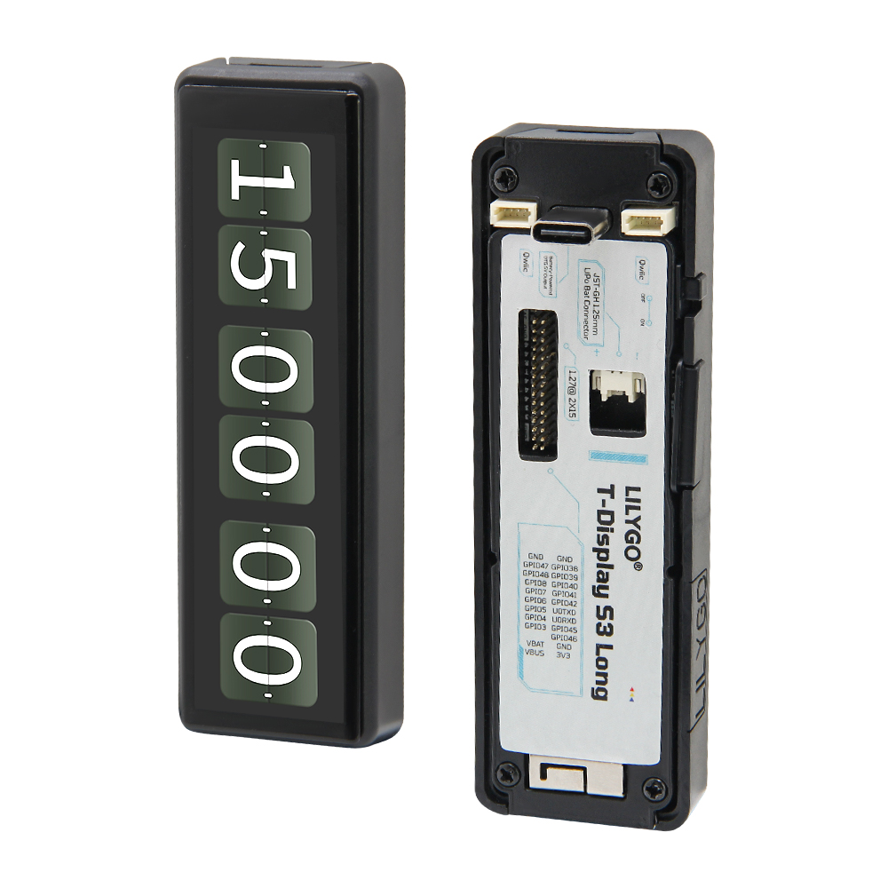
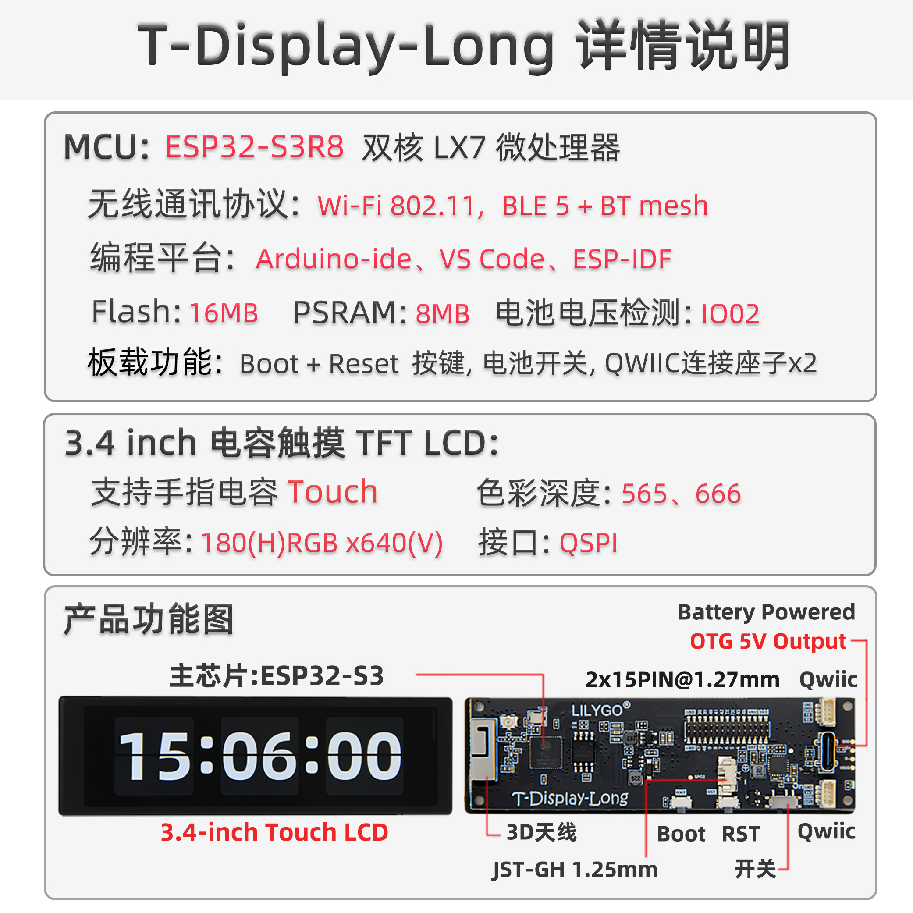
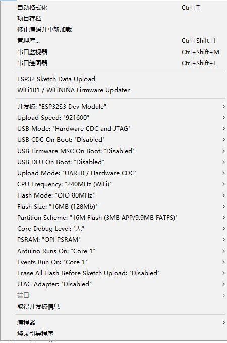
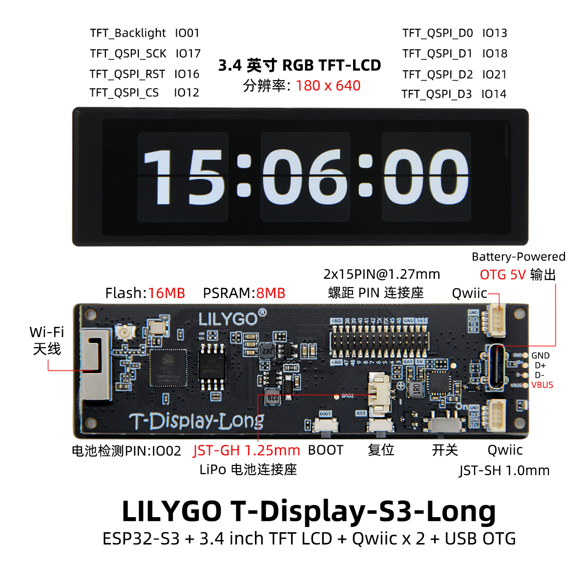

中文 简体
中文 简体LILYGO T-Display-S3-Long

版本迭代:
| Version | Update date | Update description |
|---|---|---|
| T-Display-S3-Long_V1.0 | 最新版本 | 长条形显示屏开发板初始版本 |
购买链接
| Product | SOC | FLASH | PSRAM | Resolution | Screen Type | Link |
|---|---|---|---|---|---|---|
| T-Display-S3-Long | ESP32-S3R8 | 16M | 8M (OPI) | 180×640 | AMOLED | LILYGO Mall |
目录
描述
T-Display-S3-Long 是一款基于 ESP32-S3 的长条形显示屏开发板，采用 180×640 分辨率的 AMOLED 屏幕，提供独特的纵向显示体验。开发板搭载 ESP32-S3R8 双核处理器，配备 16MB Flash 存储和 8MB OPI PSRAM 内存，性能强劲。
板载电容触摸屏、QWIIC 传感器接口、电源管理芯片和 Type-C USB 接口，支持 Wi-Fi 和蓝牙 5.0 无线通信。紧凑的长条形设计适合智能家居控制面板、工业仪表显示、信息展示终端等应用场景。
预览
实物图

模块
MCU
- 芯片：ESP32-S3R8
- PSRAM：8MB (Octal SPI)
- FLASH：16MB
- 架构：双核 Xtensa LX7
- 无线：Wi-Fi 802.11b/g/n + Bluetooth 5.0
屏幕
- 尺寸：长条形 AMOLED
- 分辨率：180x640px
- 屏幕类型：AMOLED
- 驱动芯片：AXS15231B
- 接口：SPI/QSPI
触摸
- 类型：电容触摸屏
- 接口：I2C
电源管理
- 芯片：内置 PMU
- 功能：支持电池充放电管理
- OTG：支持外部设备供电
概述

| 组件 | 描述 |
|---|---|
| MCU | ESP32-S3R8 双核处理器 |
| FLASH | 16MB |
| PSRAM | 8MB (OPI) |
| 屏幕 | 180×640 AMOLED |
| 触摸 | 电容触摸屏 |
| 无线 | Wi-Fi 802.11b/g/n + Bluetooth 5.0 |
| USB | 1 × USB Port (TYPE-C接口) |
| 接口 | QWIIC 传感器接口 |
| 按键 | BOOT + RST |
| 功耗 | 工作: 90-350mA, 睡眠: 1.1mA |
| GPIO唤醒 | 支持 |
快速开始
示例程序
| 示例目录 | 描述 |
|---|---|
| Factory | 出厂测试程序 |
| tft | 屏幕显示测试 |
| touch | 触摸功能测试 |
| QWIIC_Sensor | QWIIC 传感器示例 |
| GFX_AXS15231B_Image | 图形图像显示 |
| lvgl_demo | LVGL 图形界面演示 |
PlatformIO 开发（推荐）
- 安装 Visual Studio Code 和 Python
- 在 VS Code 扩展中搜索并安装 "PlatformIO IDE"
- 重启 VS Code 完成安装
- 打开项目文件夹：
文件→打开文件夹→ 选择T-Display-S3-Long目录 - 等待第三方库自动安装完成
- 编辑
platformio.ini文件，在[platformio]部分取消注释所需的示例路径 - 点击左下角的
✔编译项目 - 连接开发板到电脑 USB 端口
- 点击
→上传固件 - 点击
🔌图标查看串口输出
Arduino IDE 开发
- 安装 Arduino IDE
- 下载或克隆 T-Display-S3-Long 项目
- 复制
T-Display-S3-Long/lib中的所有文件到 Arduino 库文件夹 - 通过
文件→打开打开项目示例 - 配置开发板参数：

- 选择正确的端口
- 点击上传按钮，等待编译和烧录完成
ESP32 基础示例
- BLE 示例
- WiFi 示例
- SPIFFS 示例
- FFat 示例
- 更多 ESP32 功能示例参考 arduino-esp32-libraries
开发平台
- Platform IO - 推荐使用
- Arduino IDE
- ESP-IDF
引脚总览

#define TFT_QSPI_CS 12
#define TFT_QSPI_SCK 17
#define TFT_QSPI_D0 13
#define TFT_QSPI_D1 18
#define TFT_QSPI_D2 21
#define TFT_QSPI_D3 14
#define TFT_QSPI_RST 16
#define TFT_BL 1
#define PIN_BAT_VOLT 2
#define PIN_BUTTON_1 0
#define PIN_BUTTON_2 21
#define SPI_SD_CS 38
#define SPI_SD_MOSI 39
#define SPI_SD_MISO 41
#define SPI_SD_SCLK 40
#define TOUCH_IICSCL 10
#define TOUCH_IICSDA 15
#define TOUCH_INT 11
#define TOUCH_RES 16
相关测试
功耗测试
| 工作模式 | 电流消耗 | 说明 |
|---|---|---|
| 正常工作 | 90-350mA | Wi-Fi 开启，240MHz 频率 |
| 睡眠模式 | 1.1mA | 低功耗待机 |
| GPIO唤醒 | 待测试 | 外部中断唤醒 |
常见问题
Q. 开发板无法烧录程序怎么办？
A. 手动进入下载模式：- 通过 USB 连接开发板
- 按住 BOOT 按键
- 在按住 BOOT 的同时按下 RST 按键
- 先释放 RST，再释放 BOOT
- 此时可以正常上传程序
Q. USB 设备频繁断开连接？
A. 检查 USB 线缆质量，尝试更换其他 USB 端口，确保电源供应稳定。Q. OTG 功能如何使用？
A. 需要软件启用 PMU 的 OTG 功能：PMU.enableOTG(); // 启用 OTG 电源输出 PMU.disableOTG(); // 禁用 OTG 电源输出Q. 电池充电指示灯闪烁？
A. 当未连接电池只连接 USB 时，状态指示灯会闪烁。可以使用PMU.disableStatLed()关闭指示灯，但也会禁用充电状态指示。如需启用，调用PMU.enableStatLed()。Q. 物理开关的作用？
A. 将物理开关切换到 OFF 会完全断开电池与主板的连接。需要充电时，将开关切换到 ON。Q. 固件验证方法？
A. 如果遇到问题，可以烧录 预编译固件 来验证硬件是否正常。
项目
资料
依赖库
- LVGL 8.3.0 - 嵌入式图形库（注意：不要升级版本，已强制开启软件旋转）
- XPowersLib - 电源管理库
- Arduino_GFX - 图形显示库
- Adafruit_BusIO - 总线通信库
- TFT_eSPI - TFT 显示驱动库